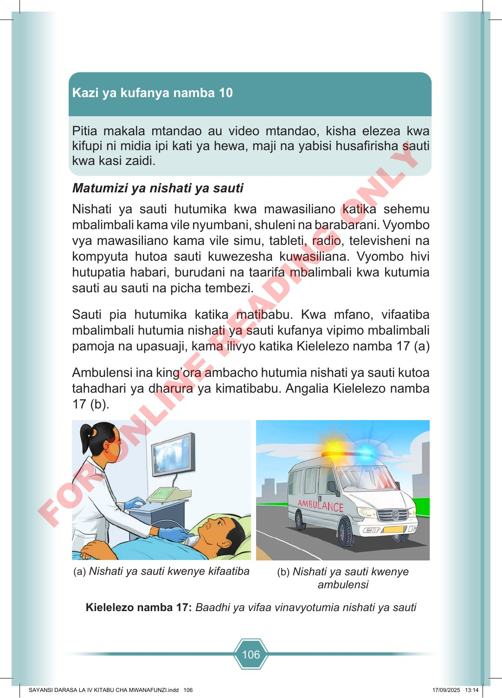

106 Kazi ya kufanya namba 10 Pitia makala mtandao au video mtandao, kisha elezea kwa kifupi ni midia ipi kati ya hewa, maji na yabisi husafirisha sauti kwa kasi zaidi. Matumizi ya nishati ya sauti Nishati ya sauti hutumika kwa mawasiliano katika sehemu mbalimbali kama vile nyumbani, shuleni na barabarani. Vyombo vya mawasiliano kama vile simu, tableti, radio, televisheni na kompyuta hutoa sauti kuwezesha kuwasiliana. Vyombo hivi hutupatia habari, burudani na taarifa mbalimbali kwa kutumia sauti au sauti na picha tembezi. Sauti pia hutumika katika matibabu. Kwa mfano, vifaatiba mbalimbali hutumia nishati ya sauti kufanya vipimo mbalimbali pamoja na upasuaji, kama ilivyo katika Kielelezo namba 17 (a) Ambulensi ina king’ora ambacho hutumia nishati ya sauti kutoa tahadhari ya dharura ya kimatibabu. Angalia Kielelezo namba 17 (b). (a) Nishati ya sauti kwenye kifaatiba (b) Nishati ya sauti kwenye ambulensi Kielelezo namba 17: Baadhi ya vifaa vinavyotumia nishati ya sauti SAYANSI DARASA LA IV KITABU CHA MWANAFUNZI.indd 106 SAYANSI DARASA LA IV KITABU CHA MWANAFUNZI.indd 106 17/09/2025 13:14 17/09/2025 13:14 F O R O N L I N E R E A D I N G O N L Y